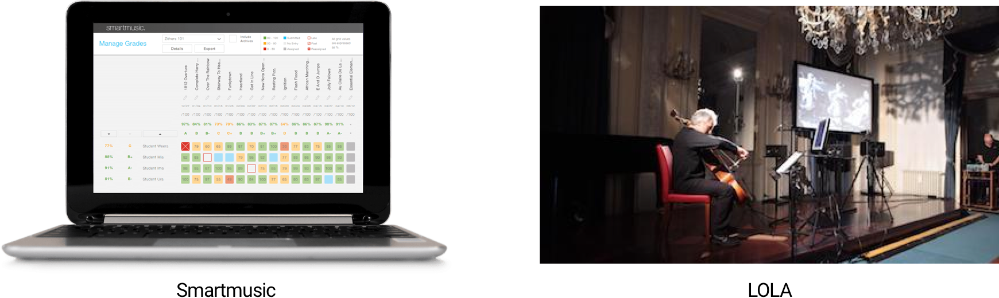
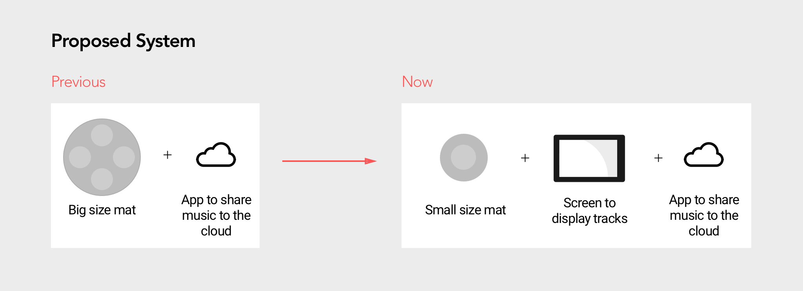

Musi
Musi, practice with your ensemble anytime, anywhere - at the tap of a foot.
- Project Brief
- 2017.9 ~ 2017.12
- Group Project (team of 4)
- My Role
- Researcher
- Product Designer
- 3D model Prototyper
- Method & Skills
- Observations & Interviews
- Brainstorming
- Cultural Probes
- User Enactments
- Prototyping
- Tools & Softwares
- Sketch
- Invision
- Arduino
- Rhino
- Laser Cutting
Introduction
We are master students from University of Michigan, as a team of four, we decided to take part in CHI 2018 Student Design Competition. This year's design theme is Engaging Communities. After doing some background research, we put our eyes on classical musicians. Solo practice is common and important for a musician to get prepared for group performance, but it can be long, tiring and not inspiring. So we designed Musi, a foot operated recording device, to facilitate asynchronous group practice between classical musicians. Musicians can record and reflect on their own practices, download others' snippets to practice with, share their recordings to the cloud with other teammates for further discussion. We would like to use Musi to create an engaging practice environment for classical musicians.
Design Process
1. Problem
Observations
We individually conducting 2 hour-long observations of the music practice wing at the music school. We found that practice is a vital part of a musician’s life. On an average, music students practice about 4 hours a day. This practice regimen requires significant repetition, experimentation, monitoring, adjustment, and feedback from peers and teachers. However, the solo practice process is very long, repetitive, and can lead to frustration.
Competitive Analysis
There are some products in the market aiming to make the solo practice more engaging and beneficial. For example:
- Tools (e.g. Smartmusic) using algorithms to analyze how accurately users hit certain pitches or rhythms, but this can not apply to multiple instruments.
- Tools (e.g. LOLA) facilitating real-time rehearsals between musicians dispersed geographically, but require a significant investment.

Are they useful? Do musicians like them? Can normal music students afford them? Therefore, we started our research ---- how can we better support classical music students in their solo practice and rehearsal?
2. Formative Study
Interviews
First, we want to learn musicians' attitudes towards music technology that could potentially influence their life. We conducted 2 in-depth interviews to broaden our understanding of the following questions:
- How can music technologies influence the behavior of musicians?
- What opportunities and constraints exist in this space?
- Which have been under- or over-explored?
“You don’t want to mess with education that has been refined over one thousand years”
-- Professor
“Classical music is derived from the palace, it is meant to be serious.”
-- Student Interviewee

The professor stressed that using technology to help teaching is very hard and not practical for us. The music student clearly expressed her resistance towards using fancy technology on classical music, like augmented visual/audio effect. We got this impression that classical musicians don't want radical changes on their current practice regime.
Cultural Probes
To deeper understand musicians’ attitudes towards technical innovation on music practice, we chose to conduct a cultural probe. We created a journal with questions and pictures as prompts, letting music students to jot down their ideas about musical instruments, clothing, spaces and anything they may interact with during practice.
The probe includes 5 different activities:
- 10 things important to you as a musician (places, clothes, instruments, etc.)
- Instrument of the future
- Clothes of the future
- Room of the future
- Share past or new recordings of your practice sessions and performances on Google Drive or MBox

Key Insights
We used an affinity wall to cluster the quotes, drawings, and observation notes from our formative study. Here are our findings:
- Classical musicians aren’t looking for radical transformations of their existing routines.
- Support from friends/families can be strong motivation for musicians to persevere.
- Remote collaboration for musicians is still an unsolved problem.
- Using technology in music pedagogy is very hard.
- Musicians seek ways like using feet to play accompanying tracks while practicing alone to hear harmonies and complex rhythms within their ensemble.
With the 5 key findings in mind, we started our own design.
3. Ideation
Brainstorming
We individually sketched 14 concepts. We then discussed and critiqued each idea, and narrowed down to 3 concepts based on the following criteria: acceptability, impact, usefulness, non-disruptiveness, learnability, and plausibility. The three concepts are:
- A foot-operated mat that would facilitate the recording, looping, and playing with other musicians' accompany tracks.
- An automatic "inspector" that will remind musicians to take a rest and provide encouragement.
- A social network that would allow musicians to share recordings of their practice with their peers and instructors, thereby bringing their community into the practice room.

The second concept looks less innovative and it
For the first and the third idea, they encourage participation from other musicians. We realized the two can complement each other. So we merged them into a new idea---- a foot-operated interactive mat with a sharing network.
Prototyping
We identified that we would need very specific insights into how musicians would use a foot controller for recording and playing musical segments. So we decided to create an open-ended design prototype of a looping mat and keep revising it during testing.
The prototype addressed potential interactions with foot-operated buttons, pedals, and foot-based gestures.
4. Testing
User Enactments
We first conducted two pilot User Enactment studies and found that:
1. Participants' feet don't move around too much;
2. For the functionality, instead of looping and synthesizing, participants would prefer a simple recording function for long tracks.
Therefore, we revised our prototype and conducted another 5 user enactments in Music School. The new prototype limits the active area to a semicircle which is reachable for one foot, the tasks are streamlined to be more concise. The revised testing scenarios include the following tasks:
- Foot gesture-based interface for recording and playing back recordings during solo practice
- Configurable buttons with haptic feedback for your feet, to record and play these recordings during solo practice
- Organizing, sharing your recorded tracks, and discovering shared recordings through an app
- Using different recordings simultaneously during practice
- A mat shared by a band and the teacher

Findings
- Design and positioning
- Different instruments have different design requirements
- Fewer controls, should be as close to the feet as possible - How to start/stop recording
- Most preferred to tap a specific area
- To stop, tap the same area again - Feedback for start/stop recording
- Signal vs Noise: Foot tapping sound should not get recorded
- Vibration feedback might not get noticed if the foot is off the mat - Sharing, navigating and selecting tracks
- Participants want to control and play multiple parts at once
- Three tracks at a time seemed manageable and helpful
- A larger screen helps the process - Other features wanted
- Metronome (We found they tend to tap their feet to keep rhythm)
- They liked the idea of a companion app
5. Iteration
These findings shaped our design.
- We finalized the function of this mat to most used ones: record, play/pause, rewind/fast-forward, and metronome;
- We downsized the mat to fit in with more instruments;
- We added a detachable screen to let users easily see and manage accompany tracks.

However, to complete the whole functionality, we have to think about the microphone and speaker as well. The mat, screen, mic, and speaker, what kind of combination will be the best?
To solve this problem, we first created a criteria considering factors like portability, customizability, etc. Then, we noted down the pros and cons of each combination based on these criteria.
We finally chose Design #4 due to the following reasons:
- Built-in speaker and mic: We want the device to be approachable, so that musicians don’t need to connect the wires and do a lot of set up.
- Using additional screen instead of phone screen: Because 1. we don’t want musicians to get distracted from their phone. 2. The additional screen will give us more design potential, like giving some visual feedback to show the status.
Final Design
We developed Musi to facilitate asynchronous group practice between classical musicians.
1. User Flow

Interaction Video
2. System Concept
Product + Companion App
The Musi Prism
- Record and playback practice sessions
- Set and adjust tempo for metronome and recordings automatically with foot- tapping
- Automatically upload recordings to the cloud
The Musi Companion App
- Load and play companion music
- Share recordings with others
- Comment on recordings
Mat + Prism
The mat and prism can be separated and placed at different places to adapt to the positioning of various instruments. Also, Musi is designed to be portable to minimize the onboarding process. It can be folded, carried, and worn on your body like a bag.

Prototype
- We used SketchUp to iterate on the shape of the product.
- We used Waveform Playlist, an open source audio recording tool, to support our recording and playback features as well as to visualize the audio waveforms.
- We used a Particle Photon to prototype the buttons on the physical device.
- We prototyped the companion mobile app using Sketch and InVision.

Evaluation
After building our prototype, we evaluated our design with stakeholders in two contexts: at the Design Expo at the School of Engineering, and at the practice room of the Music School. From these evaluations, we were able to identify areas to drive future design work and help us realize an ideal concept.
- Flexibility
We were pleased to find that Musi was flexible enough for users to adapt it to their ideal positioning without sacrificing their technique and posture. - Recording Quality
Higher quality speakers and microphones would benefit Musi, as would adjustable sound input settings - Visual Feedback
Musi's buttons provide an audible click when pressed. Still, our current system interface does not provide visual feedback on the system status. Adding visual signifiers would aid both novice users as well as more advanced users who are focused on their music, not memorizing the arrangement of buttons.